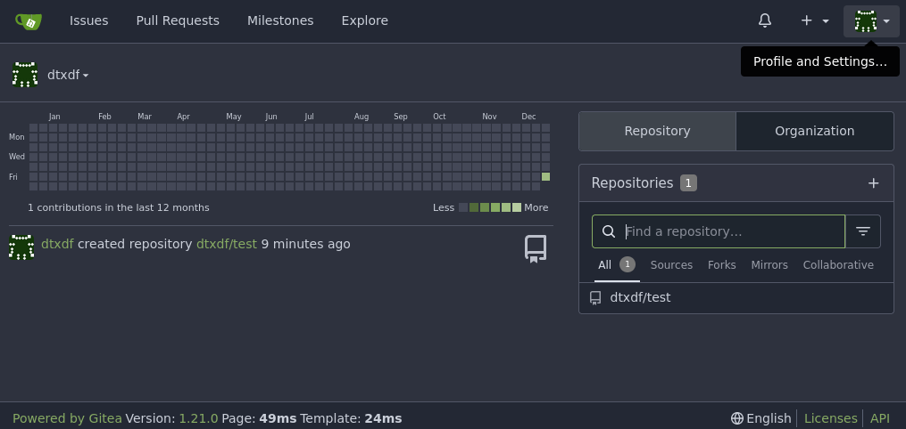
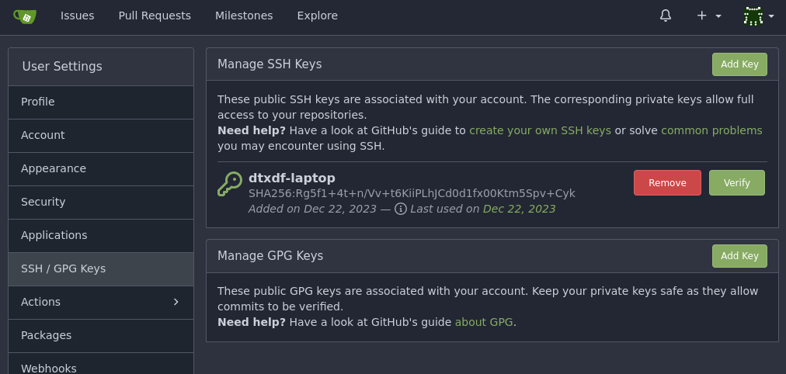

How to Install Gitea on FreeBSD Using AppJail Director
Dec 22, 2023 - ⧖ 7 minManaging our development projects is very easy nowadays, there are so many services to choose from, some with less or more features, but there is an open source project, self-hosted, with so many features that can be installed in a few minutes and the best part is that we can install it on FreeBSD. The project is called Gitea, which is a software for hosting our projects using Git. It has other collaborative features such as bug tracking, code review, continuous integration, kanban boards, tickets and wikis.
In this tutorial we will install Gitea and PostgreSQL on FreeBSD using AppJail Director.
Pre-Steps
In my system I have the following configuration:
/etc/rc.conf (Only options assumed by this article):
# AppJail
appjail_enable="YES"
appjail_dns_enable="YES"
# Recommended if your IP address changes, so that we can seamlessly use the
# following IP in our jails.
ifconfig_tap0_name="ajdns"
ifconfig_ajdns="inet 172.0.0.1/32"
# DNSMasq
dnsmasq_enable="YES"
dnsmasq_conf="/usr/local/share/appjail/files/dnsmasq.conf"
# Enable IP forwarding.
gateway_enable="YES"
/usr/local/etc/appjail/appjail.conf:
EXT_IF=jext
ON_IF=jext
FREEBSD_VERSION=14.0-RELEASE
FREEBSD_ARCH=amd64
IMAGE_ARCH=amd64
ENABLE_DEBUG=0
ENABLE_ZFS=1
SHORTEN_DOMAIN_NAMES=1
DEFAULT_RESOLV_CONF=/usr/local/etc/appjail/resolv.conf
/usr/local/etc/appjail/resolv.conf:
nameserver 172.0.0.1
/etc/pf.conf:
nat-anchor 'appjail-nat/jail/*'
nat-anchor "appjail-nat/network/*"
rdr-anchor "appjail-rdr/*"
Console Output:
# service appjail-dns status
appjail_dns is running as pid 97063.
# service dnsmasq status
dnsmasq is running as pid 98251.
# sysctl net.inet.ip.forwarding
net.inet.ip.forwarding: 1
# freebsd-version
14.0-RELEASE-p4
# uname -r
14.0-RELEASE-p4
# appjail version
3.0.0.20231220+9468250a2fb7e6f6e6f63a89eb0892e325d1cf83
# appjail-director --version
appjail-director, version 0.7.0
# zfs list zroot
NAME USED AVAIL REFER MOUNTPOINT
zroot 72.1G 531G 24K none
# ifconfig ajdns
ajdns: flags=8843<UP,BROADCAST,RUNNING,SIMPLEX,MULTICAST> metric 0 mtu 1500
options=80000<LINKSTATE>
ether 58:9c:fc:10:8e:0c
inet 172.0.0.1 netmask 0xffffffff broadcast 172.0.0.1
groups: tap
media: Ethernet 1000baseT <full-duplex>
status: no carrier
nd6 options=29<PERFORMNUD,IFDISABLED,AUTO_LINKLOCAL>
# ifconfig jext
jext: flags=1008843<UP,BROADCAST,RUNNING,SIMPLEX,MULTICAST,LOWER_UP> metric 0 mtu 1500
options=4e524bb<RXCSUM,TXCSUM,VLAN_MTU,VLAN_HWTAGGING,JUMBO_MTU,VLAN_HWCSUM,LRO,WOL_MAGIC,VLAN_HWFILTER,VLAN_HWTSO,RXCSUM_IPV6,TXCSUM_IPV6,HWSTATS,MEXTPG>
ether 00:1b:24:e0:6d:a3
inet 192.168.1.105 netmask 0xffffff00 broadcast 192.168.1.255
media: Ethernet autoselect (100baseTX <full-duplex>)
status: active
nd6 options=29<PERFORMNUD,IFDISABLED,AUTO_LINKLOCAL>
I use the development version of AppJail, so remember the version and the commit when testing AppJail.
Note: Keep AppJail and Director synchronized and up-to-date.
The virtual network I use is as follows, but nowadays you don’t have to worry about it in many cases as AppJail will create it for you:
# appjail network list
NAME NETWORK CIDR BROADCAST GATEWAY MINADDR MAXADDR ADDRESSES DESCRIPTION
ajnet 10.0.0.0 10 10.63.255.255 10.0.0.1 10.0.0.1 10.63.255.254 4194302 AppJail network
If you need more details on how to set up the above configuration, please refer to the AppJail documentation:
Gitea Configuration
As described in AppJail-makejails/gitea#basic-usage, we need to pass environment variables as follows:
- Environment variables must have the form:
GITEA__SECTION_NAME__KEY_NAME. SECTIONandKEY_NAMEmust be in uppercase. They can contain_and numbers._0X2E_will be replaced by.and_0X2D_by-.- To use the blank or global section, use
DEFAULTas the section.
So our Director file ends up as follows:
appjail-director.yml:
options:
- virtualnet: ":<random> default"
- nat:
services:
gitea:
name: gitea
makejail: gh+AppJail-makejails/gitea
options:
- expose: 3000
- expose: '2022:22'
- copydir: !ENV '${PWD}/gitea/files'
- file: /etc/rc.conf.local
arguments:
- gitea_tag: '14.0'
environment:
- GITEA__DATABASE__DB_TYPE: 'postgres'
- GITEA__DATABASE__HOST: 'gitea-postgres:5432'
- GITEA__DATABASE__NAME: 'gitea'
- GITEA__DATABASE__USER: 'gitea'
- GITEA__DATABASE__PASSWD: 'gitea'
- GITEA__SERVER__SSH_PORT: 2022
- GITEA__SERVER__DOMAIN: '192.168.1.105'
- GITEA__DEFAULT__APP_NAME: 'Welcome to my git server!'
volumes:
- gitea-db: gitea-db
- gitea-git: gitea-git
db:
name: gitea-postgres
makejail: gh+AppJail-makejails/postgres
options:
- template: !ENV '${PWD}/postgres/template.conf'
arguments:
- postgres_tag: '14.0-16'
environment:
- POSTGRES_PASSWORD: 'gitea'
- POSTGRES_USER: 'gitea'
- POSTGRES_DB: 'gitea'
volumes:
- pg-done: pg-done
- pg-data: pg-data
default_volume_type: '<volumefs>'
volumes:
gitea-git:
device: .volumes/gitea/git
gitea-db:
device: .volumes/gitea/db
pg-data:
device: .volumes/postgres/data
pg-done:
device: .volumes/postgres/done
.env:
DIRECTOR_PROJECT=gitea
postgres/template.conf:
exec.start: "/bin/sh /etc/rc"
exec.stop: "/bin/sh /etc/rc.shutdown jail"
sysvmsg: new
sysvsem: new
sysvshm: new
mount.devfs
gitea/files/etc/rc.conf.local:
sshd_enable="YES"
There is a lot of tasks that AppJail and Director accomplished for us in a single file that I’ll explain in a moment. Now run the project and see the result:
# appjail-director up
appjail-director up
Starting Director (project:gitea) ...
Creating db (gitea-postgres) ... Done.
Creating gitea (gitea) ... Done.
Finished: gitea
# appjail-director info
gitea:
state: DONE
last log: /root/.director/logs/2023-12-22_21h33m25s
locked: false
services:
+ db (gitea-postgres)
+ gitea (gitea)
As you can see it was very easy. I just run appjail-director up and Gitea is deployed. But if you enter the URL http://192.168.1.105:3000 on another system, you notice that Gitea does not display anything. Don’t worry, Gitea is initializing and performing some initial tasks, check the rc script:
# appjail service jail gitea gitea status
gitea is running as pid 91657.
After Gitea is up and running, you can register your account, create a repository and, for example, add your SSH key: click on Profile & Settings > Settings > SSH / GPG Keys.
 Profile and Settings...
 SSH / GPG Keys
Ephemeral Concept
From the Director's home page:
Director treats each jail as ephemeral. This does not mean that your jails will not persist after you stop them or your system restarts, what it means is that Director assumes that it is safe to destroy the jails since you have clearly separated the data that needs to persist or you do not need such data to persist.
Even if our jails are some type of “Stateful jails”, this does not mean that we can’t use them as “Ephemeral jails”. The idea of having ephemeral jails is very simple, but it has many advantages that are probably better described in another article: data is separated into two types, data that needs to persist and data that does not need to persist. We have already separated the data that needs to persist so if we do the following:
# appjail-director down -d
Starting Director (project:gitea) ...
Stopping gitea (gitea) ... Done.
Destroying gitea (gitea) ... Done.
Stopping db (gitea-postgres) ... Done.
Destroying db (gitea-postgres) ... Done.
Destroying gitea ... Done.
# appjail-director info
gitea: Project not found.
Our project is gone!
Don’t worry, this is what the volumes solve:
# tree -L 2 .volumes
.volumes
├── gitea
│ ├── db
│ └── git
└── postgres
├── data
└── done
7 directories, 0 files
So we can make our project again:
# appjail-director up
Starting Director (project:gitea) ...
Creating db (gitea-postgres) ... Done.
Creating gitea (gitea) ... Done.
Finished: gitea
# appjail-director info
gitea:
state: DONE
last log: /root/.director/logs/2023-12-22_21h51m23s
locked: false
services:
+ db (gitea-postgres)
+ gitea (gitea)
And our SSH keys should persist:
# cat .volumes/gitea/git/.ssh/authorized_keys
# gitea public key
command="/usr/local/sbin/gitea --config=/usr/local/etc/gitea/conf/app.ini serv key-1",no-port-forwarding,no-X11-forwarding,no-agent-forwarding,no-pty,no-user-rc,restrict ssh-ed25519 AAAAC3NzaC1lZDI1NTE5AAAAIG8B02AxX4CBRHNQHAwQIZUE454ZixeqSkAG7b9OOMxa dtxdf@dtxdf-laptop